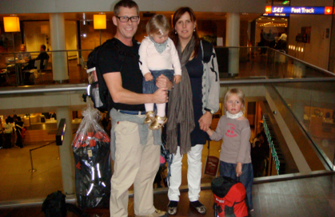

Aitutaki

Sidste sidste sidste...
torsdag den 27. marts 2008

Så skal vi snart vende næserne mod DK igen. Lørdag flyver vi fra Aitutaki kl. 18.00. Så videre til LA kl. 23.40. Fra LA kl. 15 til Frankfurt og så videre til København, hvor vi lander 2 dage efter kl. 14.10. Vi har opgivet at finde ud af, hvordan tiderne ændrer sig undervejs, så vi må bare sove igennem, når vi kommer hjem, og håbe at de 12 timers tidsforskel udjævner sig hurtigt.
Vi glæder os efterhånden til at komme hjem og se familie og venner igen, men det er også vemodigt at skulle sige farvel til det tætte samliv vi har haft på godt og ondt i ca. 150 dage. Inden vi tog afsted var der mange, der mente at det ville være hårdt at være sammen med børnene 24 timer om dagen i så lang tid. Prøv det selv! Det er skræmmende men sandt, at man lærer sine børn at kende på en helt ny måde, stærke og svage sider. Selvfølgelig glæder vi os til at komme hjem til noget voksenselskab, men det har været en stor lykke at opleve Stella og Viola på turen.
Lige nu er det så sidste dag, sidste badetur, sidste solnedgang over Stillehavet, det er meget mærkeligt, men med 30 grader, tror jeg pigerne er helt klar til forår, badekar og en masse leg hjemme på Søbakken.
Det har været skønt at møde mennesker fra hele kloden. I eftermiddag sad vi og talte om, at vi ikke havde mødt nogen danskere her på vores lillebitte ø, men tænk så sad der sørme 2 i restauranten her til aften. Den anden dag fik jeg ordnet min fødder af en pige fra Zimbabwe, og så fik jeg hørt en masse om forholdene under Mugabe, og om deres håb for en bedre fremtid. Vores kaptajn på Laguneturen fortalte mig om uddannelsesforhold på Cook Islands, og sådan har vi hver dag fået en masse input og viden til vores fremtidige liv.
Nu vil jeg drikke min sidste kop aftenkaffe inden sengetid, og læse de sidste sætninger i min sidste feriebog, og glæde mig til den første bøg springer ud, til vi skal cykle vores første tur i Dyrehaven og spise vores første rugbrødsmad :-)
Vi ses om lidt, vi skal bare lige til vores sidste danseshow i morgen.....
/Camilla
Her er vi i københavns lufthavn for ca. 5 lange måneder siden. Lidt smånervøse og spændte inden afrejsen